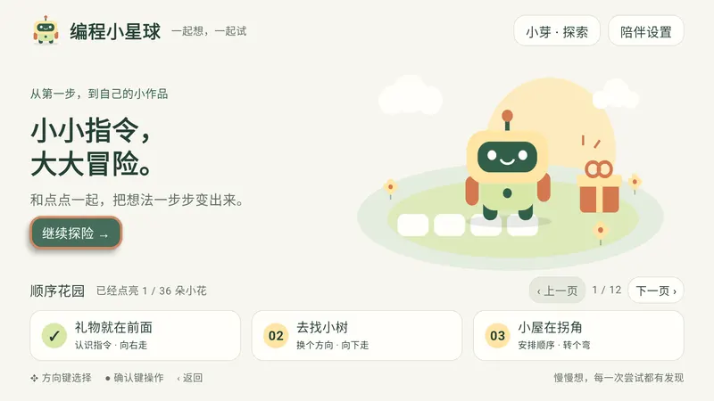
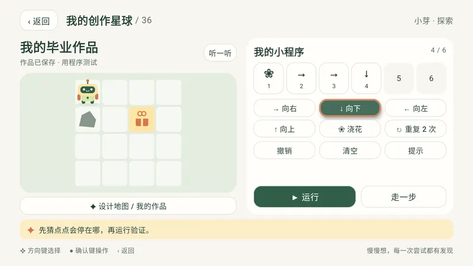
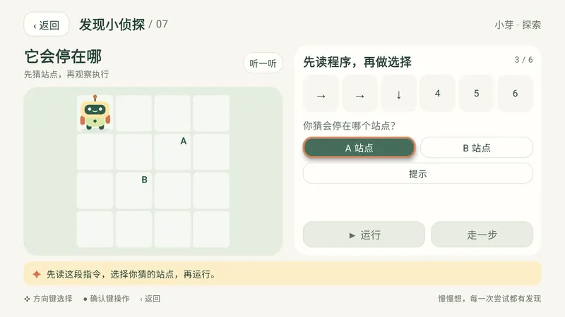
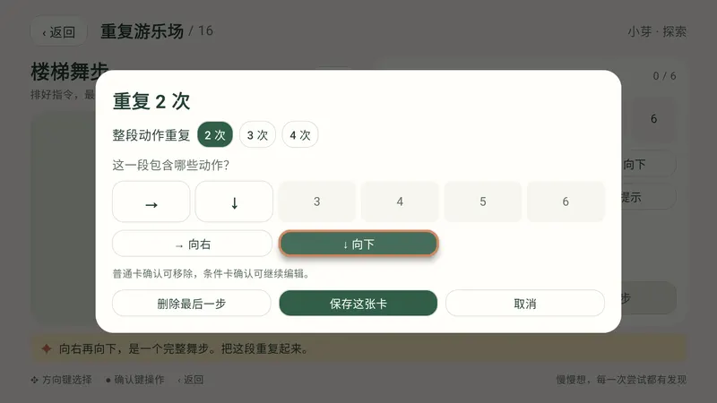
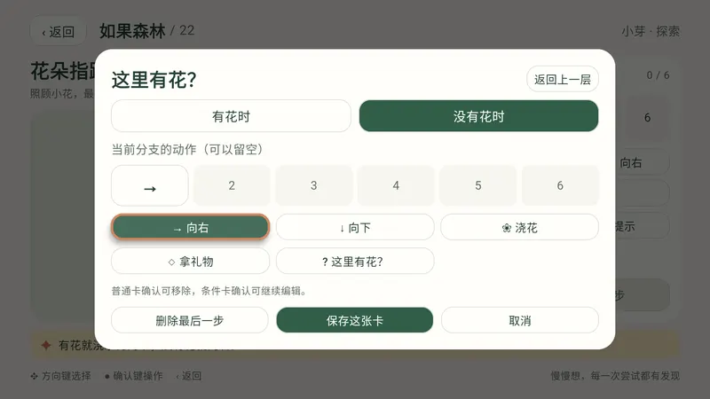
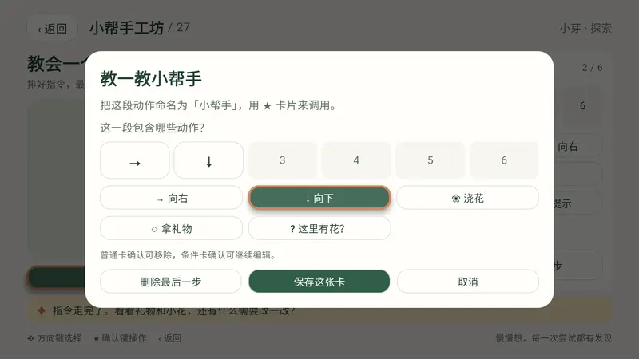
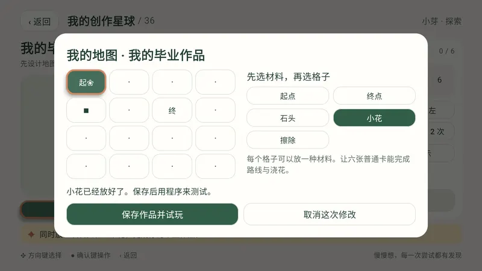
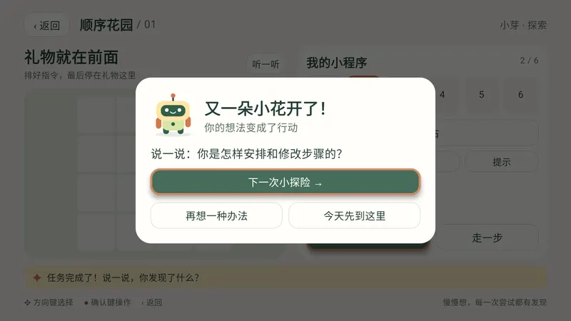

给家里的 Android TV 装一颗编程星球
小小指令，
大大冒险。
孩子拿起遥控器，给机器人点点排好箭头卡，看它一格一格走到目的地。36 个任务从顺序、预测、调试，一路走到循环、条件、动作包和自己设计地图。
1.0.0 版，9.5 MB，Android 6.0 及以上，全程离线
点一下电视画面，再用键盘方向键和回车操作；返回键（Esc）删掉最后一张卡。
一个任务这样玩
- 先想一想用手指一指路线，或者先猜点点会停在哪一格。
- 排指令方向键挑卡片，确认键放进程序，最多六张。
- 看执行点点一次走一格，当前卡片和角色同时亮起。
- 改一改撞到石头时会指出是第几张卡，改完再试，撤销和恢复原题随时可用。
36 个任务，6 颗主题星球
每个任务都有「探索」和「挑战」两套配置，共 72 个。任务可以直接选择、跨级和重玩。点一个关卡看家长参考解，也可以用方向键在关卡之间移动。
记号：×2[…] 把整段重复两次；?[❀ | →] 检查当前格有没有花，有就浇花，没有就向右；❀ 浇花；◇ 拿礼物；★ 调用小帮手；A、B 是预测题的选项。
电视上的样子
以下截图来自 1.0.0 在 Android TV 模拟器（1080p）上的验收。








三个档案，各玩各的
小芽：探索
建议 5 岁起步。路线更短、选择更少，从图形指令开始。
小星：挑战
建议 7 岁起步。步数更多，加入障碍和分支情境。
一起玩
独立的合作进度，每个任务轮流当规划员和操作员。
年龄只是起点，家长可以按孩子的实际状态选档案。每个档案分别保存进度、程序、小帮手和六张创作地图。
给家长
建议每次做两三个小任务：探索档案从 10–15 分钟起步，挑战档案约 15–20 分钟，看孩子状态随时收尾。陪着玩时可以这样问：
- 运行前：「你猜它会停在哪？」
- 出错后：「从哪一张开始不一样？」
- 循环任务：「重复的是一张卡，还是一整段？」
- 条件任务：「点点是在什么位置检查小花的？」
- 小帮手任务：「这个名字代表哪一段动作？」
- 创作之后：请孩子介绍地图，再邀请家人来挑战。
隐私与离线
安装包没有申请网络权限，课程、语音和图片全部内置。没有账号、广告或统计。进度和作品只保存在这台电视上：覆盖升级会保留，卸载会一并删除。
本版提供时长建议，暂未加入自动时长限制和家长密码。界面与语音为简体中文。
下载并装到电视
编程小星球没有上架应用商店，通过侧载安装。下载一次 APK，用下面任意一种方式装到电视或电视盒子上。
- 版本
- 1.0.0 (versionCode 2)
- 大小
- 9.5 MB
- 系统
- Android 6.0 及以上的 Android TV 或电视盒子，横屏，普通方向键遥控器即可
- 架构
- arm64-v8a, armeabi-v7a, x86, x86_64
- 验收
- Android TV API 34 模拟器（1080p）完成完整课程测试；各品牌真机未逐一验证
- 在电脑上下载 CodeSpark.apk，复制到 U 盘（FAT32 或 exFAT 格式）。
- 把 U 盘插到电视或电视盒子上，用自带的文件管理器找到这个 APK。
- 第一次安装会提示「未知来源」。按提示进入设置，为这个文件管理器打开「允许安装未知应用」。常见位置：设置 › 设备偏好设置 › 安全性和限制 › 未知来源，各品牌入口名称略有不同。
- 回到文件管理器，再次打开 APK，选择安装。完成后在应用列表里找到「编程小星球」。
- 在电视上打开支持局域网接收文件的应用。不少电视的文件管理器或应用市场自带「手机传文件」「局域网传输」功能，打开后会显示一个网址或二维码。
- 手机或电脑连同一个 Wi-Fi，打开这个网址，把下载好的 CodeSpark.apk 上传过去。
- 在电视上打开收到的 APK 安装。第一次同样需要为该应用允许安装未知应用。
- 电视能直接上网时，也可以用下载器类应用输入下载地址，直接在电视上下载安装。
https://github.com/wangwanjie/CodeSpark/releases/latest/download/CodeSpark.apk
- 在电视上打开开发者选项：进入 设置 › 设备偏好设置 › 关于，连续按「版本号」（或「Android TV OS 版本」）七次。
- 在开发者选项里打开 USB 调试或网络调试，记下电视的 IP 地址。电脑上需要已经装好 Android SDK Platform Tools。
- 电视和电脑在同一网络时执行下面的命令，电视上弹出授权框时选择允许。端口以电视显示为准，Android 11 及以上的无线调试可能要先用 adb pair 配对。
adb connect 192.168.1.50:5555
adb install -r CodeSpark.apk
adb shell am start -n cn.vanjay.codespark/.MainActivity校验安装包与升级说明
发布版使用正式密钥签名（APK 签名 v1 + v2），证书主体 CN=CodeSpark Family。可以用 apksigner verify --print-certs 核对证书指纹：
证书 SHA-256f6bc73494d125b5e4ca0c13a2f9b93e126be339b4ca3c63c69a5f67c565d4fe0
1.0.0 APK SHA-25676090b55a15ff650334f3d7601d5d278cacbfa9115004d566cfe3dc9fd1524fc
以后的新版本使用同一个密钥签名，直接覆盖安装即可保留进度和作品。安装时出现 INSTALL_FAILED_UPDATE_INCOMPATIBLE，说明设备上装着另一个签名的同包名版本，需要先卸载它（会清除该版本的记录）。